Provisional recommendation: B, high affine, for the first painted feasibility probe. It retains substantial ground visibility with constant scale across the chamber. A tests flatter ground; C tests perspective compatibility. These are engineering candidates, not recovered source-game cameras or approved painted art.
G1 is INDETERMINATE. Native stills are inspected for all four games; the required uncut HUD traversal/combat segments are missing. Last Epoch camera measurements are specifically withheld. Zero generation calls and zero paid-service spend.
Full publisher files retained and hashed. Images fit the column without cropping; click for the original. Frame size and HUD changes are disclosed, never normalized into a false match.
LoD-era guide • NOT D2R
Compact HUD gameplay. Dark floor leaves luminous shards legible, but overlapping bodies still hide anatomy. Tall walls and sarcophagi interrupt floor visibility.
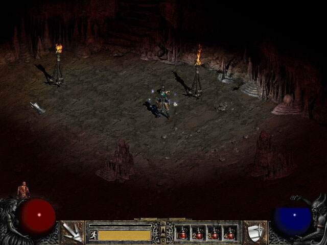
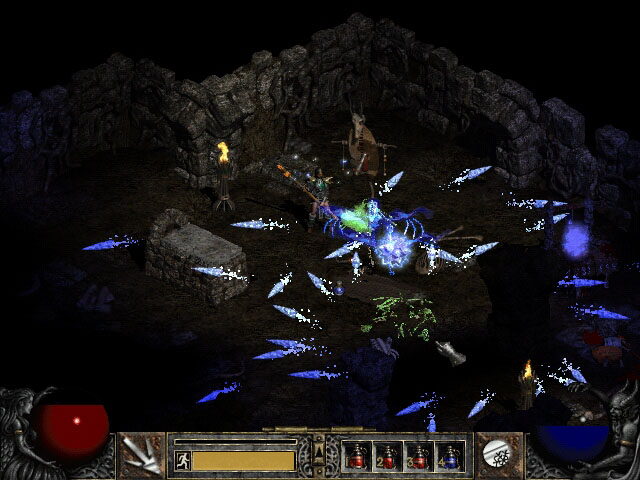
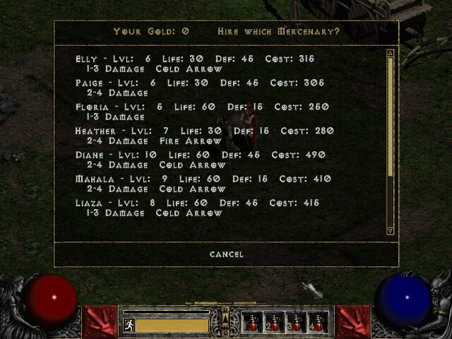
Steam app 238960 • NOT PoE2
HUD-equipped combat and large prop silhouettes. Ground detail survives in gaps between thin effects; bright gear and effects prevent reliable tight-body measurement. Quiet traversal and hideout coverage are missing.
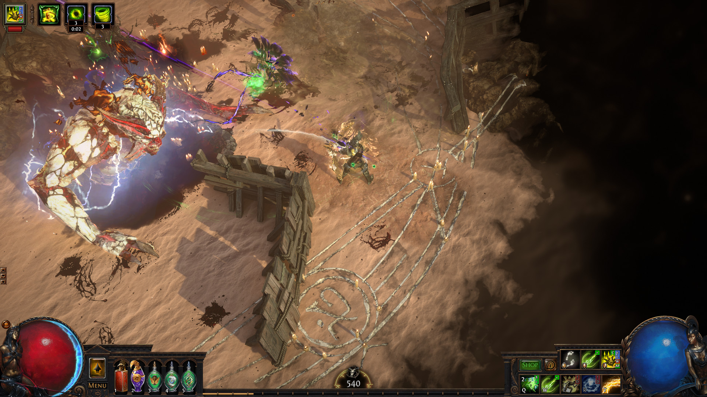
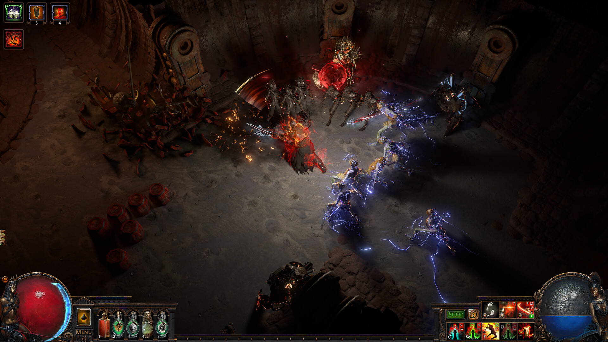
Base / AoM / FG rows kept separate
The repaired/broken bridge pair is concrete art/state evidence. Actor framing varies markedly across promotional captures; one screenshot cannot set a game-wide scale.
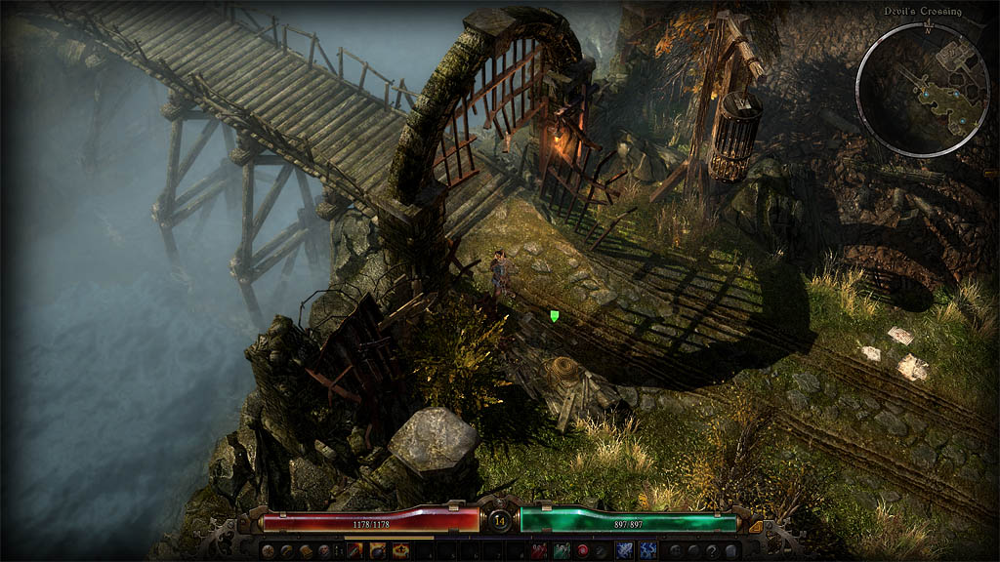
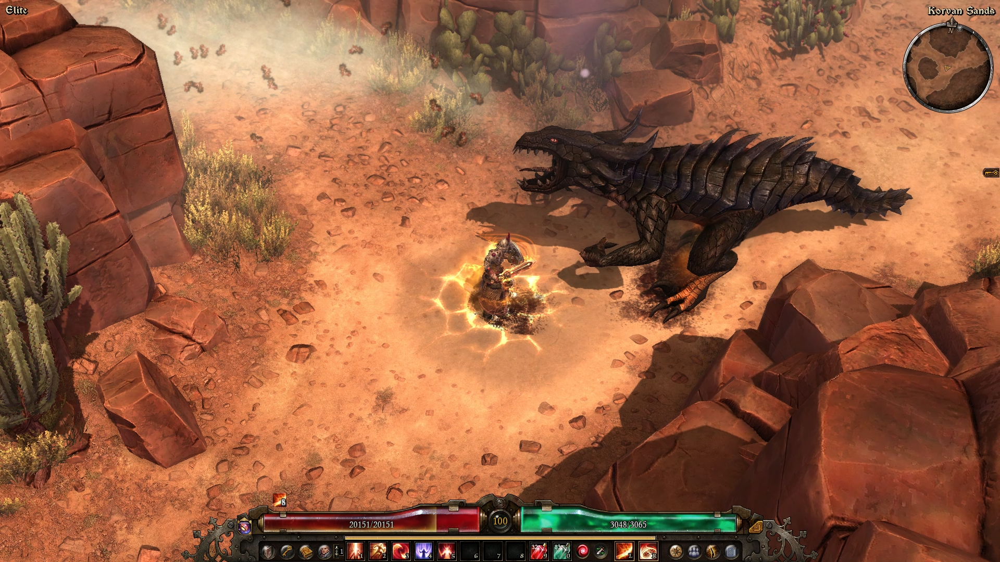
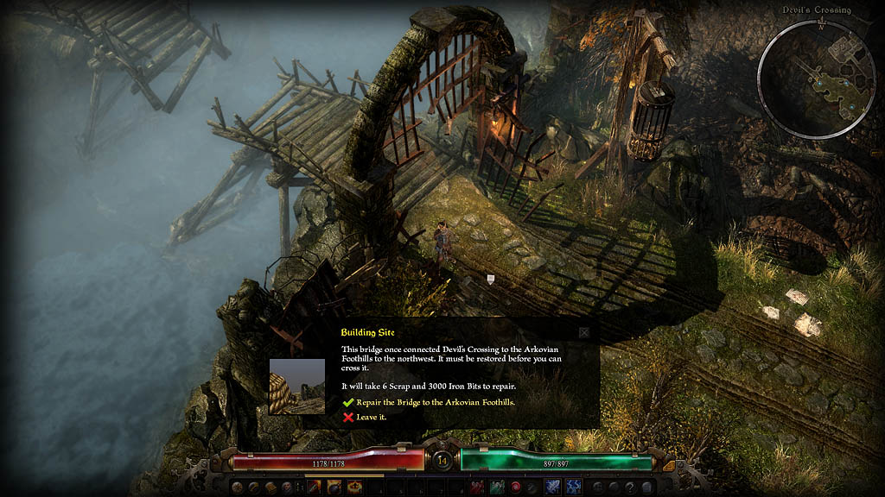
Steam app 899770 • HUD-hidden caveat
Monumental floors, raised platforms, railings and foliage. Gold arcs contrast with green floors; busy clusters hide bodies. Ordinary gameplay camera remains unverified because HUD is absent.
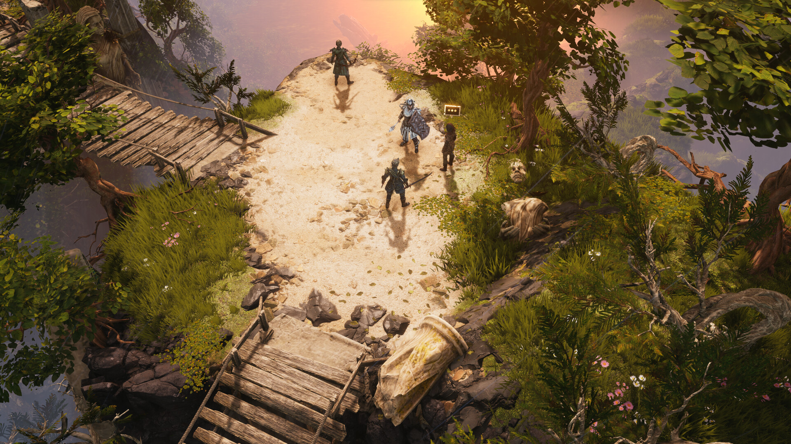
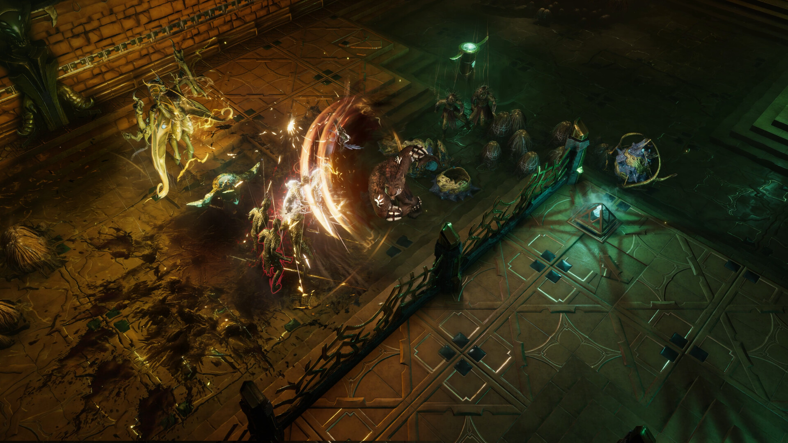
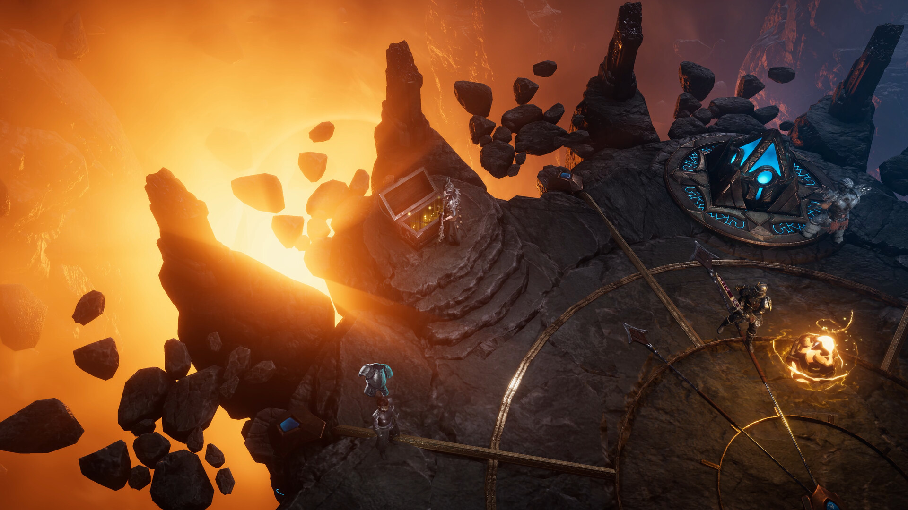
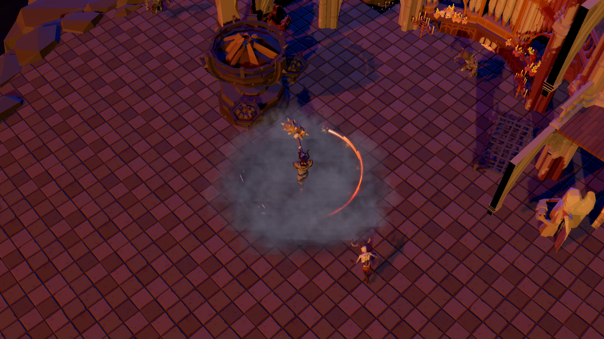
The supplied Godot cathedral frame is a PROJECT REPLICA. Warm floor, cool shadows, a tile grid and a broad smoke/trail ring are visible. Prior camera approval belongs to its own workstream. Its animated 3D bodies do not prove persistent painted layers, gear transfer or sprite perspective compatibility.
Same 10×8 m logical room, same 2 m centre probe (9.5% viewport height), same 47° yaw, same ground anchor, same objects and 9% HUD reserve. Elevation changes between A/B; perspective changes between B/C. C retains the recovered lens/elevation and recalibrates distance to match centre body height. Every floor, prop and body vertex uses its candidate projection.
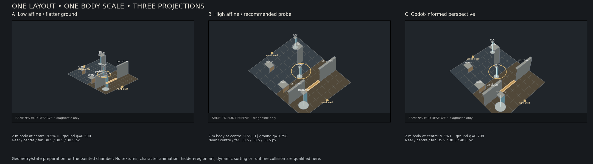
The diagram shows volumetric diagnostic proxies, not paintings or sprite deformation. Equal logical height can project to different vertical screen spans under perspective; one uniform sprite scale cannot prove view compatibility. No motion, gear or interaction pass is claimed.
Body excludes weapons and effects when visible; opaque clothing/armor still bounds the body estimate. Endpoint uncertainty is additive, not statistical confidence. D2 has a separate continuous bottom strip; the modern HUDs overlay the world. Both raster and active-rectangle denominators are reported. No game-wide scale is inferred.
| Source | Body px | Body / full H | Body / active H (range) | Foot x,y / active | Use |
|---|---|---|---|---|---|
| D2-06 | 59 | 12.3% | 13.7% (11.8–15.5%) | [0.506, 0.537] | MANUAL_ESTIMATE |
| GD-05 | 58 | 10.1% | 10.1% (9.0–11.1%) | [0.5, 0.54] | MANUAL_ESTIMATE |
| GD-03 | 166 | 15.4% | 15.4% (13.9–16.9%) | [0.496, 0.573] | MANUAL_ESTIMATE |
| POE-04 | indeterminate | — | — | [0.502, 0.456] | BODY_INDETERMINATE |
| LE-05 | 130 | 12.0% | 12.0% (10.6–13.5%) | [0.501, 0.473] | PROMOTIONAL_COMPOSITION_ONLY |
| LE-08 | 145 | 13.4% | 13.4% (11.9–14.9%) | [0.524, 0.5] | PROMOTIONAL_COMPOSITION_ONLY |
Gold box: manual body estimate. Cyan cross: estimated support. Full originals remain underneath, unchanged. Overlay endpoints are available in measurements.json.
Body excludes diagonal staff and blue motes; standing/idle instant.
Standing actor, native guide file may be publisher downsample; no default zoom inference.
Armor included where anatomy is hidden; sword and golden ring excluded. Different scale from GD-05; not a game-wide constant.
Gold equipment/effects obscure head and shoulder support. Coarse visible central actor+gear extent approx y340–505 is NOT tight-body measurement.
Lower-center actor, player assignment provisional; do not infer ordinary gameplay scale.
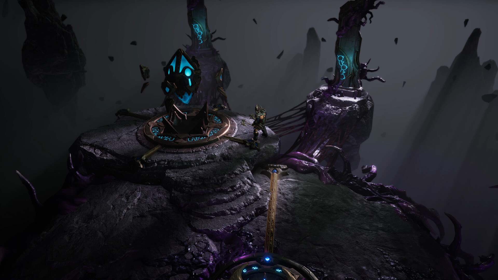
Standing actor beside runic plinth; helmet included, sword excluded.
HUD-equipped Frozen Orb dungeon: bright detached shards cross dark ground; central bodies overlap; foreground tomb/rock hides floor. Body isolation indeterminate.
Original Diablo II / LoD-era official guide; exact patch unknown; NOT D2R
Publisher / provenance page · Full retained file
SHA-256 1787ddbaee3fe56d59bdc50bb78fc4ad6865ccf974c699e0e0c54eba518411d4
Stash and inventory cover the world. Excluded from projection and character-scale measurement.
Original Diablo II / LoD-era official guide; exact patch unknown; NOT D2R
Publisher / provenance page · Full retained file
SHA-256 fcc2d4d33a19e15cbdb6d7c29ea7382a2ee15331d138753dba6760fbbfcba505
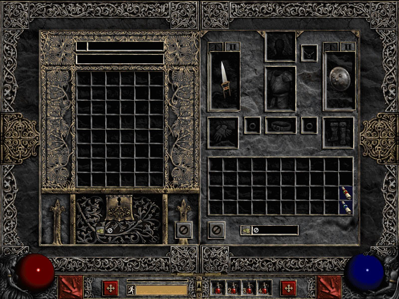
Hire-mercenary dialog over camp grass and wagon. Establishes visible NPC interaction UI, not navigation or normal camera framing.
Original Diablo II / LoD-era official guide; exact patch unknown; NOT D2R
Publisher / provenance page · Full retained file
SHA-256 4aecd75b8e8c1364b5cd5637fb545992ba6028c5ea3f030753e3e56ff9ac34ab
1920x1200 HUD scene. Large creatures and rocks occupy near ground; central blue/white effects obscure actor feet and floor.
Base-game promotional screenshot, Dec 2015; exact patch unknown
Publisher / provenance page · Full retained file
SHA-256 bbf52c88e90f071c425526abb33e758d9568e19ca71a927ce39f30a6c108f677
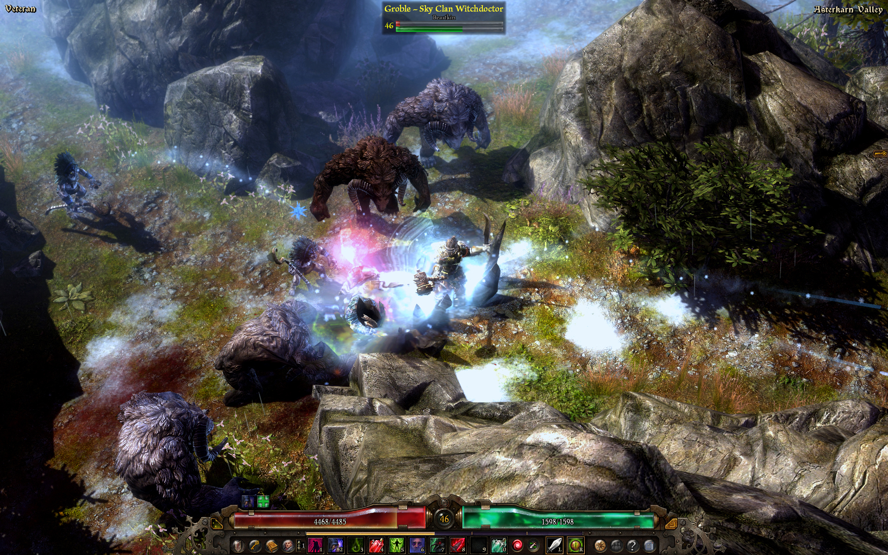
HUD boss scene: bright central fire overlaps player and giant airborne body; red scenery reduces separation of red effects. Cast pose prevents standing-height comparison.
Ashes of Malmouth promotional screenshot, Oct 2017; exact patch unknown
Publisher / provenance page · Full retained file
SHA-256 0dec3c18b97375200c8b6746d515dcbba22ca91e5448d73a774ef0d6ad049380
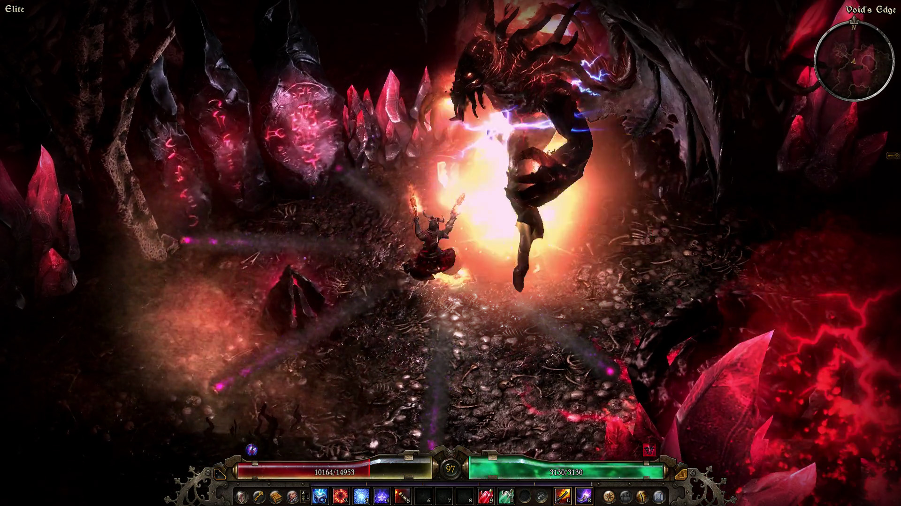
HUD scene: isolated armored player beside huge beast on pale sand; gold ground effect, contact shadows and exposed rock tops visible. Zoom setting unknown.
Forgotten Gods promotional screenshot, Feb 2019; exact patch unknown
Publisher / provenance page · Full retained file
SHA-256 2f69b45f111255dd5a6e58ba4b09dbc9a8ce9d0dc6e7625b8fff9b06fd837a36
Class-wheel graphic, not gameplay. Retained as an intake rejection.
Last Epoch; exact screenshot patch unknown
Publisher / provenance page · Full retained file
SHA-256 7d57f378d38bc790db6b9b272af9bf088e14abb608590688e9a8c9979c5ff8ed
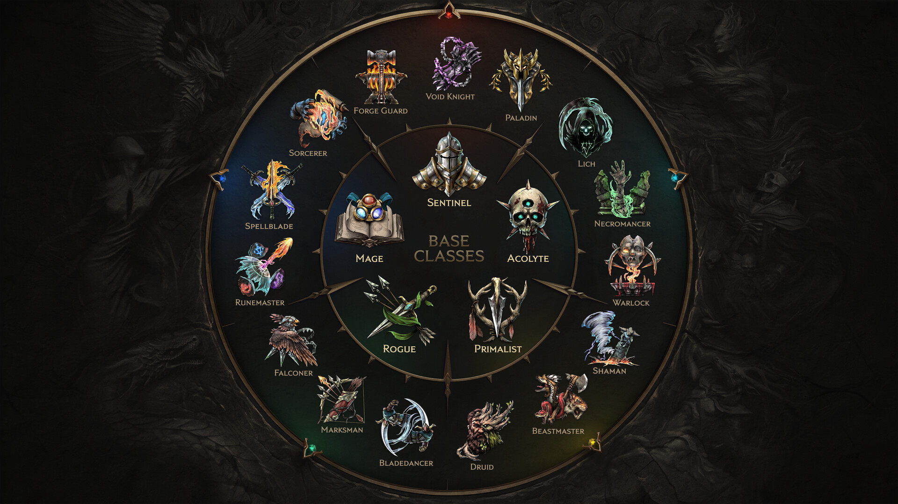
Passive-tree menu covering world. Excluded from camera measurements.
Last Epoch; exact screenshot patch unknown
Publisher / provenance page · Full retained file
SHA-256 9f0dde8e880f59dfa2585bdd3b5e4fb34f7a56c0f408d33e955581fc596e36b2
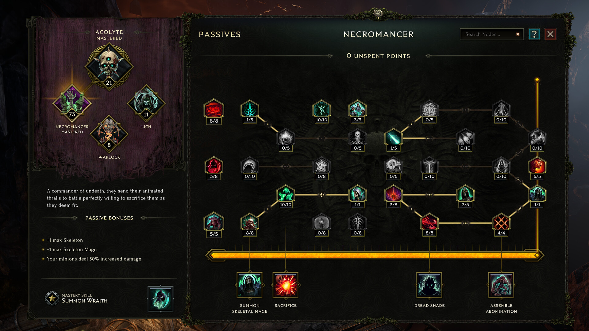
Ballista skill menu covering world. Excluded from camera measurements.
Last Epoch; exact screenshot patch unknown
Publisher / provenance page · Full retained file
SHA-256 f859bb5cb12646e23c74167c94777ed8d36ffe2479d901c333f58988fac4a431
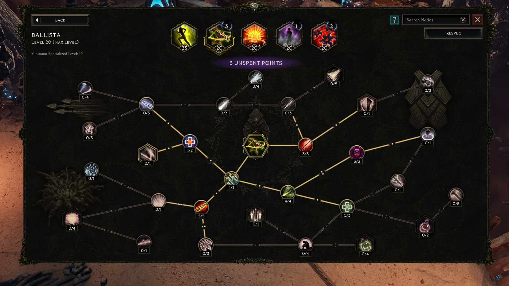
PoE1 HUD and circular arena; golden fire, purple energy and central winged actor. Body/gear/effects overlap; ellipse is architecture, not calibrated camera fiducial.
PoE1; NOT PoE2; exact screenshot patch unknown
Publisher / provenance page · Full retained file
SHA-256 fe01090f9a78f70e81f0ce7099beec6b763761a4a10a9deaf0e768575377bb5e
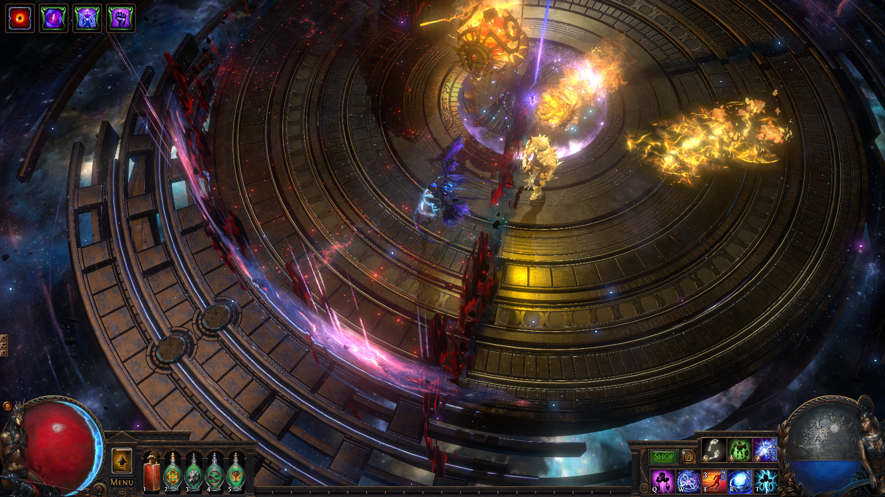
PoE1 HUD; barrels, tall industrial wall and machine amid melee. Blue line-like arcs retain gaps through which ground is visible; red effects overlap central body.
PoE1; NOT PoE2; exact screenshot patch unknown
Publisher / provenance page · Full retained file
SHA-256 3b8f00b4baa30dc076e9b5535d7c9ac7a2fe09a2e5ab6e8441f322b148c8f0f7
PoE1 HUD; sand arena, enemies, red trails, fire and blood patches. Exact damaging areas and effect lifecycle cannot be read from one instant.
PoE1; NOT PoE2; exact screenshot patch unknown
Publisher / provenance page · Full retained file
SHA-256 1f4166760a650d0bb89ed9d8231d0a983a2d7d094b0a82cc702245d66b3a456d
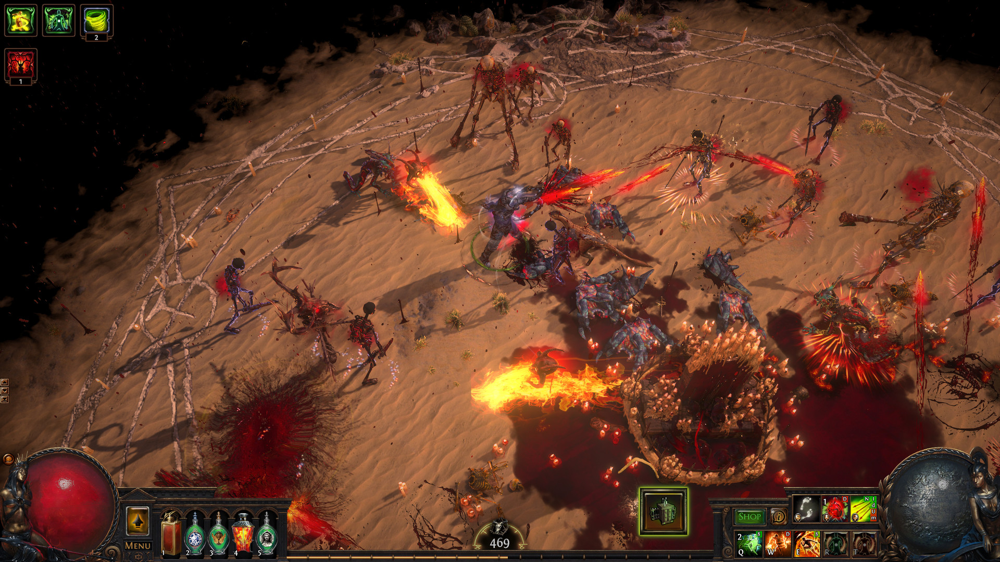
PoE1 HUD; central actor to right of tall wooden fence, large monster at left, ground ring and fire/blue effects. Equipment obscures true head boundary; body height uncertain.
PoE1; NOT PoE2; exact screenshot patch unknown
Publisher / provenance page · Full retained file
SHA-256 92399fc4901417afa52a690ccc82af45a423959d766f936fbbb2aac83a04ced3
Cold-blue melee cluster beside path and rock; several bodies overlap. Grass and dirt remain separable away from combat; body bounds indeterminate.
Original D2 / LoD-era guide; patch unknown
Publisher / provenance page · Full retained file
SHA-256 9b98fb5b8916aaf0ee1ede2c15386c27b90132bb82eb8cfd24ddfe465f0732aa
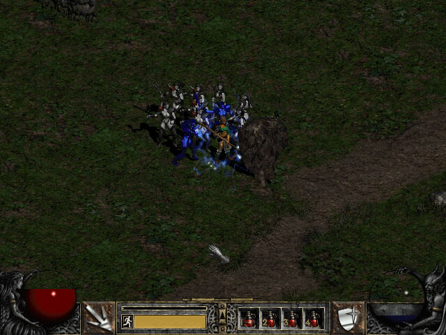
Forge/inventory panels and enlarged character view; BETA 0.9.2 label visible. This is not ordinary gameplay framing.
Last Epoch; patch unknown; HUD/camera state to inspect
Publisher / provenance page · Full retained file
SHA-256 183f10bf67187ca7767173aa5377bed5b76166b7c20f65f877142d59b08f51ae
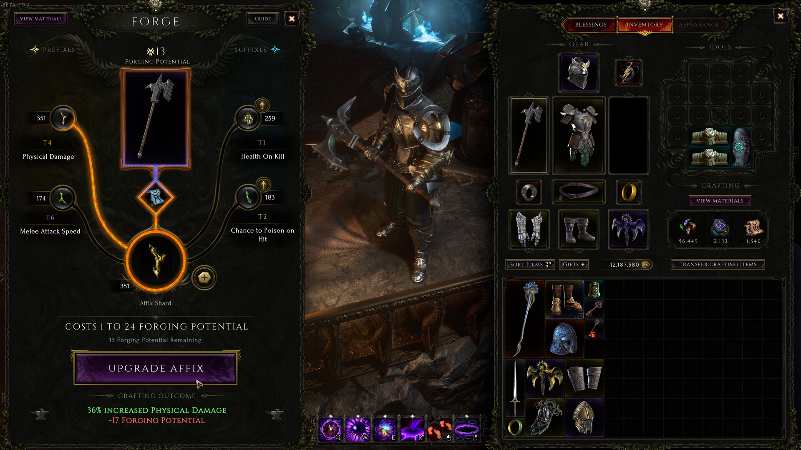
Bridge clearing with four actors, NPC speech icon and foliage/stone edges. No ordinary HUD; composition reference, not default camera evidence.
Last Epoch; patch unknown; HUD/camera state to inspect
Publisher / provenance page · Full retained file
SHA-256 c23beeff4a01ad2b07cb54c040cc919e7f25206d3065ca248a192b9a69887ef2
Elder Gaspar dialog over elevated stone platform; cyan/purple portal and stairs. No standard combat HUD. State persistence not demonstrated.
Last Epoch; patch unknown; HUD/camera state to inspect
Publisher / provenance page · Full retained file
SHA-256 08f65f82f5f76f5dc830f1591ba50cd5779071b0c5362fd20fdfd8be60e7bb05
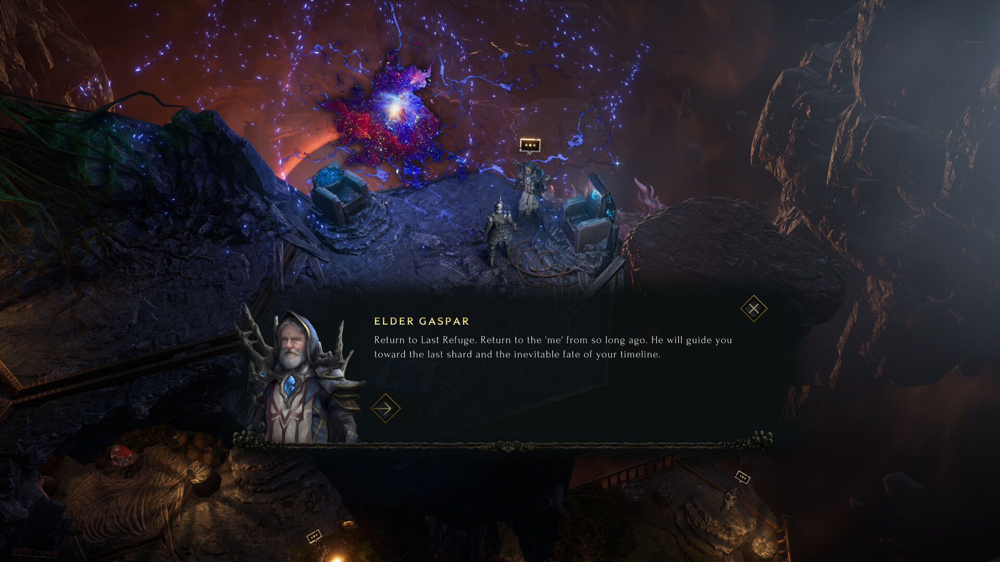
Opened chest with gold light, monumental circular platform and runic central object. Open state visible; loot event/count and traversability unverified.
Last Epoch; patch unknown; HUD/camera state to inspect
Publisher / provenance page · Full retained file
SHA-256 defc06c3c26e12ecf08a2ed41ffa1dc4bc40715dd52d82214aecac3557ebc2fb
Diagonal masonry floor, tall wall, foreground sarcophagus and blue spell clusters. Ground edges traceable; no dynamic occlusion or collision proven.
Original D2 / LoD-era guide; exact patch unknown; NOT D2R
Publisher / provenance page · Full retained file
SHA-256 3cb8eda6fd688ffb1daf13dcac69cf2c8fb374e17b93b33b57d6e2f30fa495e3
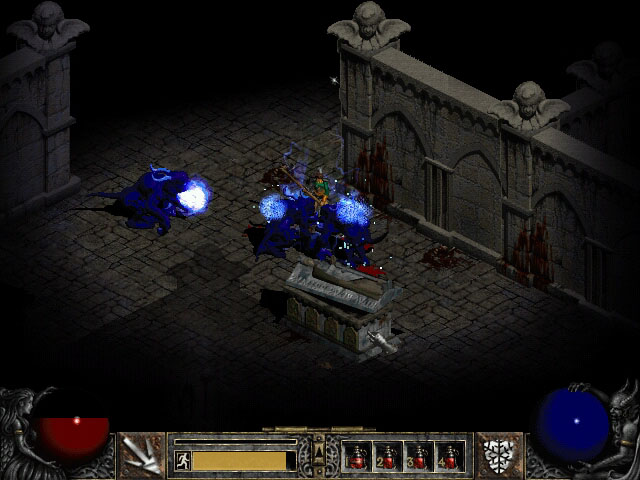
Isolated caster in cave with torches, stalagmites, shadow and open floor. Quiet instant only, not a traversal segment.
Original D2 / LoD-era guide; exact patch unknown; NOT D2R
Publisher / provenance page · Full retained file
SHA-256 b8b5d1a47c43e1d5a1e3d9a87f333f26704309d886100c805b2fe26e0420679b
Devil’s Crossing: broken bridge behind tall gate arch; repair dialog visible. Guide pairs this with GD-05. Timing/path-cache updates not shown.
Grim Dawn official guide; exact patch unknown
Publisher / provenance page · Full retained file
SHA-256 bccd061f65131211fe87845ed20370fdf808588282b3705b9409df8ef514d734
Same viewpoint and actor vicinity as GD-04; bridge visibly spans gap; dialog removed. Supports before/after visible geometry only, not transition correctness.
Grim Dawn official guide; exact patch unknown
Publisher / provenance page · Full retained file
SHA-256 bd04d060c267a6db435fd2dbcaee1652f64234638c8b81f21e591b164320768d
Gold chest among standing stones and ghostly figures. No ordinary HUD; prop/material/occlusion reference only.
Grim Dawn official guide; exact patch unknown
Publisher / provenance page · Full retained file
SHA-256 631dfa00c2235a4a55c2d0bbf6732913e7c854655f8354add7b55ee5f15cd69f
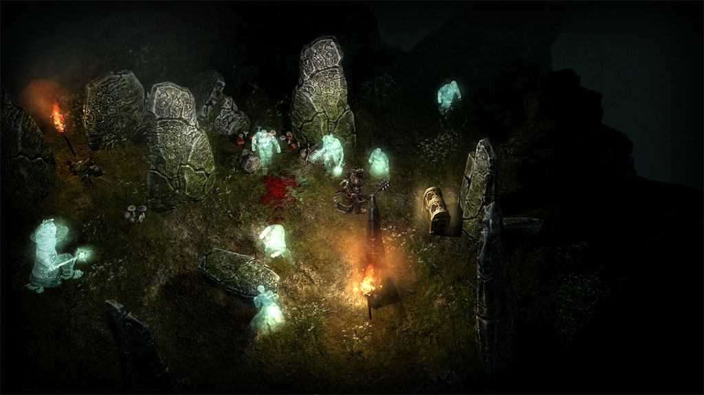
Actor beside monumental runic plinth on raised circular stone; visible steps/sidewalls, large foreground architecture. No HUD.
Last Epoch; patch unknown
Publisher / provenance page · Full retained file
SHA-256 bebfc810a8dec1bc2813b394cdae7166bce49059fdb07aef19eaa391a75e8fd0
Gold/red arc at left, green-lit floor at right, diagonal railing crossing foreground, dense combat bodies. Source-rendered combat promotional still; player isolation indeterminate.
Last Epoch; patch unknown
Publisher / provenance page · Full retained file
SHA-256 a3f28bcf1ddf127d2f2265d6eaa24255085ec059c65605cef60961d78c6e6494
Fire patches and winged enemies over grass/soil, cyan attack near central actor. Dense wings/FX overlap; no HUD; no motion claim.
Last Epoch; patch unknown
Publisher / provenance page · Full retained file
SHA-256 2e16b2d9aa8d76c8bf274a1baf3e7a5f617063253cf6223c7496495c663ca832
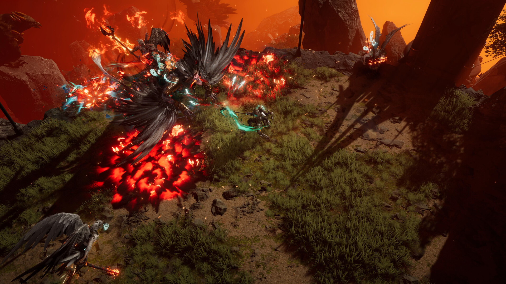
Bright purple beam across stony shore; actor feet near edge; reflected water highlights compete with energy. No proof of splash/material response.
Last Epoch; patch unknown
Publisher / provenance page · Full retained file
SHA-256 6f9d9c6f04be1ac48ce15eca1129e5e2ee0223f7e9408ad15a7ad248dcad330a
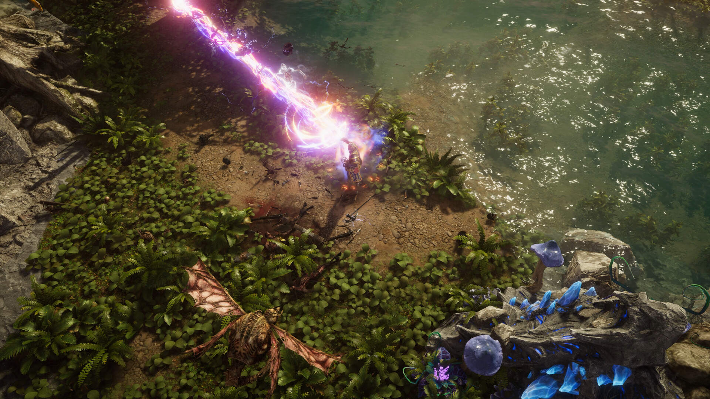
Godot cathedral at source 1.000s (60fps source): circular smoke/trail around player, diagonal tile grid, tall structure upper left, colored lighting. Never source-game evidence.
PROJECT REPLICA; never native Grim Dawn
Publisher / provenance page · Full retained file
SHA-256 219d065482827ebedd2c93ed0e402fb8e2913b3c47dc7de865cdb3c93e5afafc
Findings and next action · Sources · Measurements · Layout data · Experiment receipt
{kind=link}
{kind=link}
{kind=link}
{kind=link}
{kind=link}
{kind=link}
{kind=link}
{kind=link}
{kind=link}
{kind=link}
{kind=link}
{kind=link}
{kind=link}
{kind=link}
{kind=link}
{kind=link}
{kind=link}
{kind=link}
{kind=link}
{kind=link}
{kind=link}
{kind=link}
{kind=link}
{kind=link}
{kind=link}
{kind=link}
{kind=link}
{kind=link}